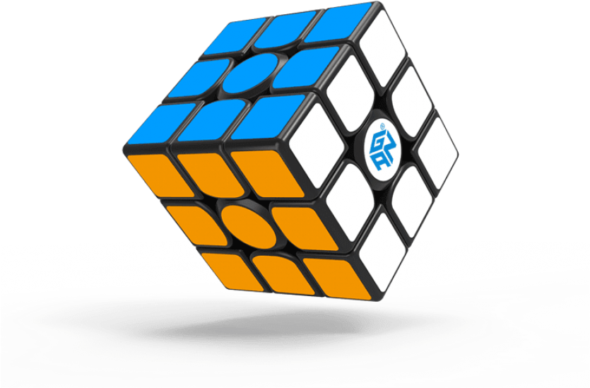
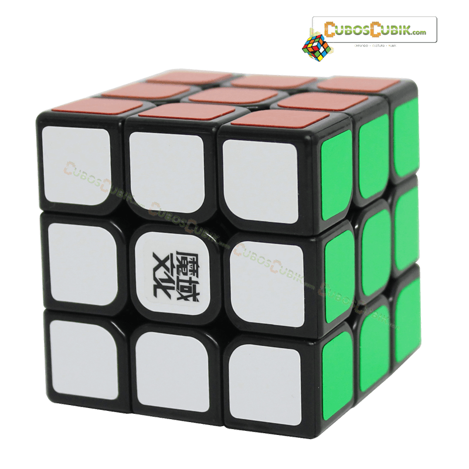
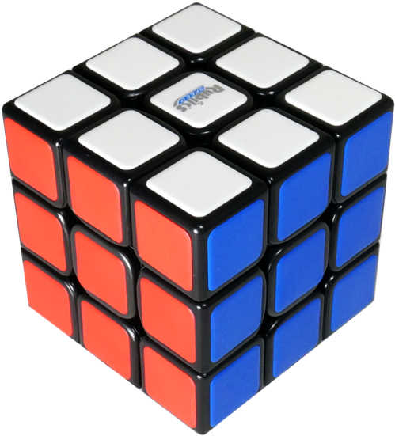
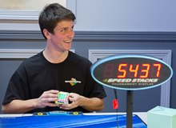

Anda kagum saat teman anda lihai dalam memainkan rubik dengan sangat cepat? di benak anda mungkin berkata "how it possible?". Setelah anda berpikir sejenak, mungkin anda berencana untuk membelinya, mungkin anda akan tertarik untuk mempelajarinya, dan mungkin juga anda akan riset lebih dulu, dan di sini lah, anda berada di tempat yang tepat. Rubcub merupakan wadah untuk mencari informasi seputar rubik 3x3 bagi pemula. Halaman ini didesain seminimal mungkin. Di halaman ini anda dapat mengenal rumus-rumus rubik, merk rubik terbaik, dan pemain rubik tercepat di dunia.
SPEEDSOLVING METHOD
*CFOP
Cross, First 2 Layers, Orientation, Permutation (CFOP) adalah metode yang paling populer untuk mempercepat penyelesaian Rubik's Cube. Ini adalah metode yang digunakan oleh semua pemegang rekor dunia 3x3 dalam satu dekade terakhir. Metode ini sangat cocok untuk anda jika anda seorang pemula. Video di atas akan menjelasakan bagaimana cara untuk menyelesaikannya.
*Roux
Roux adalah metode pemecahan cepat kubus Rubik yang ditemukan oleh Gilles Roux. Roux didasarkan pada metode Blockbuilding dan Corners First. Ini terkenal karena jumlah gerakannya yang rendah, kurangnya rotasi, penggunaan gerakan M yang banyak pada langkah terakhir, dan kemampuan beradaptasi dengan One-Handed Solving.
Ada beberapa step untuk menyelesaikan :
Bangun Blok 1x2x3 di mana saja.
Bangun blok 1x2x3 kedua yang berlawanan dengan blok 1x2x3 pertama, tanpa mengganggu blok 1x2x3 pertama. Setelah langkah ini, seharusnya ada dua blok 1x2x3: satu di sisi kiri bawah, dan satu sisi kanan bawah, membiarkan irisan U dan irisan M bebas bergerak.
Langkah 1 dan 2 disebut sebagai Dua Blok Pertama
Secara bersamaan mengarahkan dan mengubah empat sudut yang tersisa pada lapisan atas (irisan-U). Jika dilakukan dalam satu langkah, ada 42 algoritma. Kumpulan algoritma ini biasanya disebut sebagai CMLL. Dimungkinkan juga untuk menggunakan COLL dan beberapa set algoritma CLL lainnya. Namun, set ini tidak seefisien CMLL karena mereka mempertahankan bagian yang tidak dimiliki CMLL. Empat sudut yang tersisa juga dapat diselesaikan dalam dua langkah, yang membutuhkan lebih sedikit algoritma.
Arahkan 6 tepi yang tersisa hanya dengan menggunakan gerakan M dan U (UF, UB, UL, UR, DF, DB perlu diorientasikan dengan benar).
Selesaikan tepi UL dan UR, dengan mempertahankan orientasi tepi. Setelah langkah ini, lapisan sisi kiri dan kanan harus selesai.
Selesaikan bagian tengah dan tepi dalam irisan M. Langkah ini terkadang juga disebut L4E atau L4EP. lihat Enam Tepi Terakhir.
Langkah 3 dan 4 disebut sebagai 10 Potongan Terakhir
*ZZ
Metode ZZ adalah metode penyelesaian cepat 3x3 yang dibuat oleh Zbigniew Zborowski pada tahun 2006. Metode ini difokuskan baik pada jumlah gerakan rendah maupun kecepatan putaran tinggi; selama sebagian besar F2L, solver hanya perlu membuat L, U, dan R bergerak, yang berarti tangan solver tidak pernah meninggalkan sisi kiri dan kanan kubus, sehingga penyelesaian lebih cepat. Selain itu, edge sudah diorientasikan ketika solver mencapai lapisan terakhir, yang berarti solver memiliki lebih sedikit kasus untuk ditangani. Metode tersebut, termasuk EOLine dan EOCross, awalnya diusulkan pada tahun 2003 oleh Ryan Heise di Yahoo!. Namun, metode ini menjadi populer dan dikaitkan dengan Zbigniew Zborowski setelah ia secara mandiri menciptakan metode tersebut pada tahun 2006 dan mengembangkan situs web.
Ingin mempelajari metode tersebut? simak video diatas.
*Petrus
Metode Petrus, ditemukan oleh Lars Petrus, adalah metode pembuatan blok di mana F2L diselesaikan secara intuitif tanpa algoritma. Petrus pernah menjadi metode speedcubing paling populer kedua setelah Fridrich/CFOP; namun saat ini sering dianggap ketinggalan zaman karena popularitasnya terus menurun sejak munculnya "Tiga Besar" (CFOP, Roux dan ZZ).
Blockbuilding seperti Petrus kadang-kadang sebagian digunakan dalam pemecahan CFOP untuk membuat XCross.
Untuk lebih jelasnya anda dapat simak video diatas.
Popular Brand
*Gan

GAN adalah perusahaan desain dan manufaktur rubik dengan kecepatan eksklusif yang dinamai sesuai nama perancang dan pemilik Ganyuan Jiang. Merek GAN terkenal dengan inovasi yang konstan dan kubus kecepatan edisi GAN356 dianggap sebagai kubus kecepatan 3x3 premium yang tersedia di pasaran saat ini. Merek GAN mendapatkan banyak pengikut setelah speedcuber yang paling terkenal Feliks Zemdegs mengubah speedcube "utama" ke model GAN357 pada tahun 2015 dan kemudian menjadi duta utama merek tersebut. Beberapa rekor dunia telah dipecahkan dengan GAN Cube 3x3 Speed cubes.
*Moyu

MoYu adalah salah satu merek rubik terkemuka di Cina. Mereka berkomitmen untuk merancang dan membangun kubus kecepatan yang sangat baik untuk cuber di seluruh dunia. Fokus mereka adalah merancang dan membangun rubik khusus untuk speedcubing. Mereka terus meningkatkan produk mereka dan merilis yang baru. Salah satu seri yang terkenal adalah Moyu RS3M.
*Qiyi

QiYi adalah perusahaan manufaktur dan desain kubus berkecepatan tinggi dan teka-teki berliku yang inovatif, yang menjadi terkenal pada tahun 2018 dengan membuat rubik berkualitas tinggi dengan harga terjangkau. Perusahaan terus berkembang dan memperluas jangkauan produk mereka. Mereka memiliki banyak kolaborator desain produk yang sukses, yang paling terkenal adalah Mats Valk yang berkolaborasi dengan QiYi untuk menciptakan sub-merek VALK yang sangat populer.
Mungkin Qiyi MP 3x3 adalah seri yang wajib anda coba, karena seri ini mirip seperti Moyu RS3M.
Fastest Speedcubers
*Feliks Zemdegs

Nama keluarganya berasal dari Latvia, sedangkan kakek dari pihak ibu berasal dari Lithuania. Zemdegs membeli rubik pertamanya pada April 2008 terinspirasi oleh video speedcubing dan tutorial di YouTube. Catatan waktu non-resmi yang pertama kali ia rekam adalah sebuah video dengan rata-rata waktu 19.73 detik pada 14 Juni 2008. Dia saat ini menggunakan metode CFOP untuk menyelesaikan kubus 3x3x3, metode Yau untuk menyelesaikan kubus 4x4x4, dan metode CLL untuk menyelesaikan kubus 2x2x2.
Zemdegs menjuarai kompetisi pertamanya di New Zealand's Championships (Juli 2009) dengan waktu rata-rata 13.74 detik di babak final. Dia juga memenangkan cabang 2x2, 4x4, 5x5, 3x3 dengan mata tertutup, dan 3x3 dengan satu tangan.
Pada kompetisi berikutnya, yakni Melbourne Summer Open (Januari 2010), Zemdegs memecahkan rekor dunia pertamanya untuk cabang 3x3x3 rata-rata dan 4x4x4 rata-rata, dengan waktu 9.21 detik dan 42.01 detik masing-masing.
Ia memenangkan cabang 3x3 di Kejuaraan Kubus Rubik Dunia di Las Vegas pada Juli 2013 dengan rata-rata 8.18 detik dan juga menjadi yang pertama dalam cabang 4x4, dan 3x3 satu tangan. Selain itu, ia memenangkan cabang 3x3, 4x4, 5x5, dan 2x2 di Kejuaraan Dunia Kubus Rubik yang berlangsung di Sao Paulo pada Juli 2015. Dia juga berhasil memperebutkan tempat kedua di cabang 6x6, 7x7, dan Megaminx.
*Tymon Kolasiński
Tymon terkenal karena memecahkan rata-rata rekor dunia Pyraminx Drew Brads pada 10 Desember 2017 setelah hanya satu setengah tahun aktivitas di cubing dan saat ini pemegang rekor dunia untuk rata-rata 3x3 tercepat 5,09 per 19 Desember 2021. Pada 2019, ia menjadi juara dunia Pyraminx dengan rata-rata 2,40 di final WCA World Championship 2019.